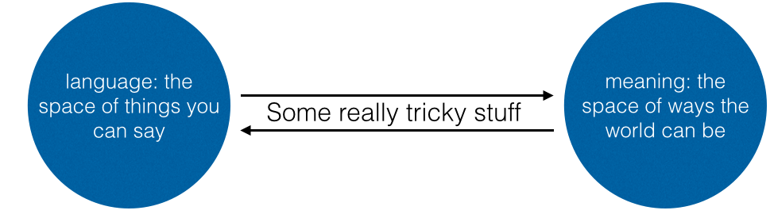
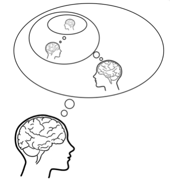
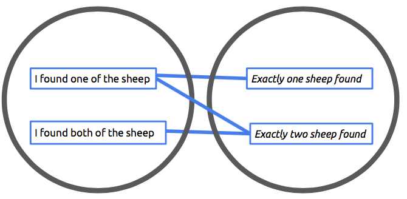
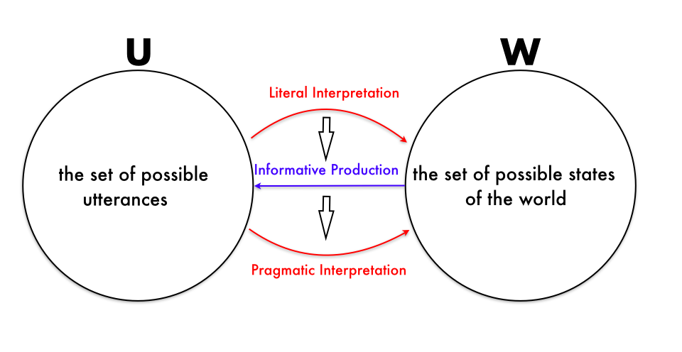
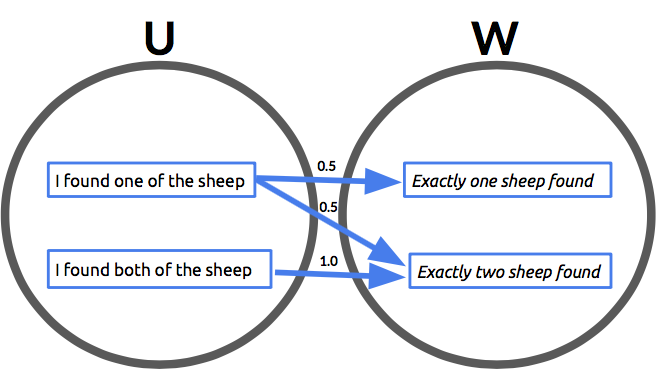
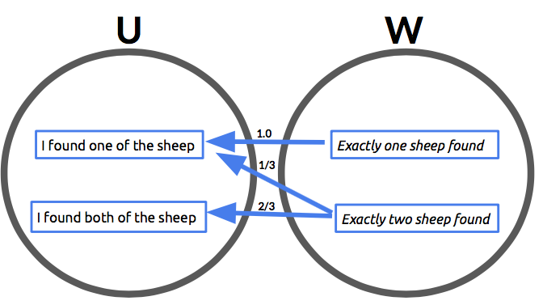
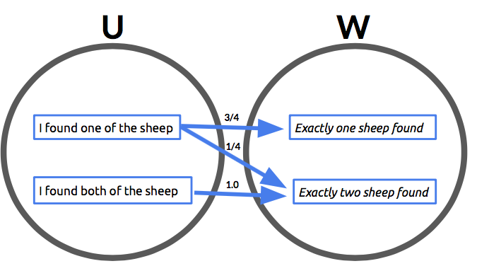

Social Reasoning in Arcadia
A tour of the Bayesian perspective on pragmatics
This is an introduction to the nested reasoning models (I think that you think that I think…) that I worked on in my Phd. I’ve tried to make this light on mathematical detail (barring the occasional technical digression) in favour of the big picture point, that Bayesian inference and nested reasoning are really great tools for thinking about language and meaning.
Picture the scene: it’s midday in Arcadia and Echo is waiting for Narcissus to finish his lengthy beauty routine:
Echo: Will you be done soon?
Narcissus: Don’t hold your breath.
We gather from Narcissus’ response that the answer is no, but how? After all, if Echo had asked “what is a useful piece of advice when deep sea diving”, Narcissus’ reply would take on a totally different character. So it would seem that the meaning we infer from Narcissus’ utterance depends not only on the utterance itself, but the context in which it is said.
Meaning, to understate the issue, is a bit of a head scratcher. We could venture to say that Narcissus’ statement has semantic content (it’s a recommendation to not hold your breath), and meanings in different contexts (“No I won’t be ready any time soon.”, “Holding your breath is a poor way to dive.”), which is inferred from the context. (Deciding what content belongs to the statement as opposed to the context is often tricky. For instance, “don’t hold your breath” is an idiom in English - the meaning “It will take a long time” is at least somewhat baked into its semantic content.)

This inference to obtain the “full” meaning from the semantic content and context, which we make so easily, is complicated to spell out, even if a vague, informal way:
if Narcissus had been able to answer truthfully that he would be done soon, he would have done, but he did not. Given that, and since “Don’t hold your breath” is relevant advice in situations where you’re going to have to wait a long time, it seems that Narcissus is trying to convey that he won’t be done soon.
The study of the semantic content belongs to the field of semantics, while the richer meaning derived from reasoning about the situation - the pragmatic content - is the focus of pragmatics (The distinction was described as follows by a student in a class I TA’ed: “Semantics is about what things mean, and pragmatics is about what they like actually mean.”. Relatedly, I’ve always wanted to write a philosophy paper introducing a like actually operator LA, such that LA(P) iff P is like actually true.). The hope is that by factoring the relation between language and the world into these two pieces, we can simplify and refine our understanding of how that relationship works.
I want to show how we can boil down the essence of the above reasoning, and get out a paradigm for formalizing pragmatics which involves nested inference: an inference about another agent’s inference. What I’ll describe is the Rational Speech Acts (RSA) paradigm, and comes from previous work on game theory going back to Lewis.

My goal here is to show why the language of Bayesian probability (and in particular, recursive inference models like RSA) are the Right Tool for the Job: they neatly incorporate and generalize a logical semantics, can be computationally modeled, experimentally tested, integrated with machine learning, and what for my money matters most, formalize the essence of social reasoning. In short, they are for pragmatics what classical logic is for semantics.
Starting Simple
OK, so in the interest of tractability, let’s exchange our complex example from above for something much simpler and more mundane. Our Classical couple are looking for two sheep that have wandered off from the herd (shepherding is really the only profession in Arcadia):
Echo: Did you find both sheep?
Narcissus: I found one of them.
This example, or something similar, is the drosophila of pragmatics: a scalar implicature. It’s like the previous example in that the semantic and pragmatic content differ; Narcissus doesn’t explicitly say that he didn’t find both of them. That’s a state of affairs compatible with his utterance. After all, if you’ve found both, it’s true that you’ve found one. A logician might represent the semantic content of his utterance as
\[ (1) \quad \exists s. found(N,s)\]
However, if it was true that he’d found both sheep, he would have said as much, so we can infer that he found one but not both. We could represent this pragmatic content as
\[(2) \quad \exists s. found(N,s) \wedge \neg\forall s. found(N,s)\]
Note that (1) does not logically imply (2). That is, knowing that (1) is true is not enough in itself to know that (2) is true. And yet, we do know, or at least strongly suspect (2) is the case on the basis of Narcissus’ utterance.
So if we can’t get from (1) to (2) by logical means, we’ll need something else, capable of representing the counterfactual reasoning: “since (2) is a more informative statement than (1) (on account of implying (1)), if Narcissus been in a position to say (2), he would have. But he didn’t, so he wasn’t.”.
Fortunately, this example is simple enough that we can formalize it - i.e. build a model (with nice interactive code) which captures everything we are presently interested in about it. So let’s.
Preliminaries
We’re going to refer to the set of all utterances as U. U represents all the things Narcissus could have said as a reply to Echo’s question. Because this is a simple model, we’ll replace the infinitude of possible utterances with a more modest number, 2. U = { I found one of the sheep, I found both of the sheep}.
There’s another set we need to consider, the set W of all possible states (i.e. things which could be the case in the world). Again, our present purposes allow us to keep this simple too
- one: the state in which Narcissus has found exactly 1 sheep
- two: the state in which Narcissus has found exactly 2 sheep
We’re now in a position to talk about literal meaning. In a state w \(\in\) W, an utterance is either true or false. For example, if Narcissus has found one sheep, so that the world state is one, then saying I found both of the sheep is untrue. He’d be deluded or deceitful to say it.
OK, so formally, that all means that the semantics is a relation, which is a function of type \(((U,W)\to\\{\mathit{True},\mathit{False}\\}\)) (we write \(\llbracket u \rrbracket(w)\) to mean that the thing u means is compatible with the world w). More visually, a world w and an utterance u are related if there’s a line between them, as in the diagram below:

To make things a bit more interactive, here’s some code to play with in a probabilistic programming language (this introduction uses PPLs to model cognition) which represents the semantics. Nothing probabilistic yet, but WebPPL will feature again below in a more sophisticated capacity.
var worlds = [{totalSheepFound:1},{totalSheepFound:2}]
var utterances = [
"I found one of the sheep",
"I found both of the sheep"]
var meaning = function(utterance, world){
(utterance === "I found one of the sheep")
&& (world['totalSheepFound']>0) ? true :
(utterance === "I found both of the sheep")
&& (world['totalSheepFound']==2) ? true :
false}
meaning("I found both of the sheep",{totalSheepFound:1})
Overview of The Model
And now for the Bayesian part. We’ll start by modeling literal interpretation, via a model I’ll call \(L_0\), which is hardly anything more than the semantics we already have in a slightly different shape. We’ll use \(L_0\) to build a model of production (i.e. choice of utterance given world state) called \(S_1\), which in turn we’ll use to build our end goal, \(L_1\). \(L_1\) is a model of interpretation which accounts not just for semantic meaning, but for pragmatic meaning. We can think of \(L_1\) as a model which reasons about a speaker \(S_1\) which is itself reasoning about \(L_0\). Sorry if that’s a bit of a mouthful. The big picture idea is that by reasoning about your interlocutor reasoning about you, you can infer extra, pragmatic, meaning beyond the semantic content of what you hear.

This image graphically represents the overview above. On the left we have the space of utterances, and on the right, the space of worlds. Models of interpretation, often called “listeners”, are shown as red arrows (in a precise sense discussed below) from U to W, while models of production, sometimes called “speakers”, are depicted as blue arrows in the opposite direction. Finally, the vertical arrow between speaker and listener models are there to suggest that the \(L_1\) is build from the \(S_1\), and the \(S_1\) from the \(L_0\).
(Brief digression with technical hat on: for the computer scientists, there’s a more general recursive definition: \(S_n\) is defined in terms of \(L_n\\__1\), which is defined in terms of \(S_n\\__1\), and so on. \(L_0\) is the base case of the recursion, and the fix point \(L_m\) such that \(L_m\) = \(L_m\\__1\) represents the ideal listener, which is closely related to the notion of a game theoretic equilibrium.)
The Literal Listener \(L_0\)
First of all, what type of thing is \(L_0\)? It’s going to be a function which takes u \(\in\) U and returns a distribution over all w \(\in\) W. This is just a way of saying it’s a conditional distribution \(L_0\)(w|u), but I prefer the function perspective (*putting on the pointiest most arcane ivory tower shaped hat*, a conditional distribution is a morphism in a very special category - the Kleisli category of the distribution monad - which is precisely why it makes sense to view them as arrows, and implicitly is what we’re doing when we do probabilistic programming. If you do probabilistic programming in Haskell, then it’s also explicitly what you’re doing.).
Here’s the (simplest possible) definition of \(L_0\) (I’m ignoring things like cost, non-uniform priors on worlds and utterances, rationality parameters - all useful, but unnecessary for deriving scalar implicatures):
\[L_0(w|u) = \frac{\llbracket u \rrbracket(w)}{\sum_{w'} \llbracket u \rrbracket(w')}\]
If you’re like me, this equation might seem less than helpful. Here’s an explanation of what it actually amounts to: After hearing an utterance u, \(L_0\) thinks all worlds compatible with the utterance they just heard are equally likely. Here’s code that implements the \(L_0\):
var worlds = [{totalSheepFound:1},{totalSheepFound:2}]
var utterances = [
"I found one of the sheep",
"I found both of the sheep"]
var meaning = function(utterance, world){
(utterance === "I found one of the sheep")
&& (world['totalSheepFound']>0) ? true :
(utterance === "I found both of the sheep")
&& (world['totalSheepFound']==2) ? true :
false}
var l0 = function(utterance){
Infer({model: function(){
var world = uniformDraw(worlds);
condition(meaning(utterance, world))
return world}})}
viz(l0("I found one of the sheep"))
viz(l0("I found both of the sheep"))
So \(L_0\) is a simple generalization of a logical semantics. Probabilistic programming is useful for defining this sort of model, particularly when things start getting complicated. Oh, and here’s a visualization of the \(L_0\) posterior conditional distributions:

The Informative Speaker \(S_1\)
There’s a sense in which production is the dual of interpretation. A production model is a conditional distribution p(u|w); given a state, it gives a distribution over utterances. The particular production model we’re interested in is \(S_1\), defined as:
\[S_1(u|w) = \frac{L_0(w|u)}{\sum_{u'} L_0(w|u')}\]
This production model’s goal is to maximize informativity; it has some state w it wants to convey, and it put the most weight on the utterance u which gets the literal listener \(L_0\) to place the most weight on w after hearing u. Again, code, to make that interactive:
var worlds = [{totalSheepFound:1},{totalSheepFound:2}]
var utterances = [
"I found one of the sheep",
"I found both of the sheep"]
var meaning = function(utterance, world){
(utterance === "I found one of the sheep")
&& (world['totalSheepFound']>0) ? true :
(utterance === "I found both of the sheep")
&& (world['totalSheepFound']==2) ? true :
false}
var l0 = function(utterance){
Infer({model: function(){
var world = uniformDraw(worlds);
condition(meaning(utterance, world))
return world}})}
var s1 = function(world){
Infer({model: function(){
var utterance = uniformDraw(utterances)
factor(l0(utterance).score(world))
return utterance}})}
viz(s1({totalSheepFound:1}))
viz(s1({totalSheepFound:2}))
And a diagram of the conditional distributions:

The Pragmatic Listener \(L_1\)
OK, so we had a listener \(L_0\). And we had \(S_1\) thinking about \(L_0\). Now we’re going to have \(L_1\), which is a model of a listener who thinks about \(S_1\) thinking about \(L_0\):
\[L_1(w|u) = \frac{S_1(u|w)}{\sum_{w'} S_1(u|w')}\]
You can think of \(L_1\) hearing an utterance u and asking the following question: what world state must \(S_1\) have been in to have said u. See what happens when you run the code.
var worlds = [{totalSheepFound:1},{totalSheepFound:2}]
var utterances = [
"I found one of the sheep",
"I found both of the sheep"]
var meaning = function(utterance, world){
(utterance === "I found one of the sheep")
&& (world['totalSheepFound']>0) ? true :
(utterance === "I found both of the sheep")
&& (world['totalSheepFound']==2) ? true :
false}
var l0 = function(utterance){
Infer({model: function(){
var world = uniformDraw(worlds);
condition(meaning(utterance, world))
return world}})}
var s1 = function(world){
Infer({model: function(){
var utterance = uniformDraw(utterances)
factor(l0(utterance).score(world))
return utterance}})}
// pragmatic listener
var l1 = function(utterance){
Infer({model: function(){
var world = uniformDraw(worlds)
factor(s1(world).score(utterance))
return world }})}
viz(l1("I found one of the sheep"))
viz(l1("I found both of the sheep"))
Or just see the figure below:

The takeaway is that \(L_1\) hears I found one of the sheep and infers that it’s more likely to be the case that only one sheep has been found. Tada, it’s a scalar implicature!
So to wrap up, we’ve seen how to model a simple type of pragmatic meaning using nested Bayesian models. This example was simple, but the core idea of pragmatic phenomena arising naturally from a semantics and nested reasoning is powerful. All sorts of pragmatic phenomena can be tackled with tools of this ilk, like vagueness, metaphor, hyperbole, focus, m-implicature, questions, generic language and politeness.
With a logical semantics, we had a way to get from utterances to compatible world states, but no way to handle pragmatic meaning formally. By making things probabilistic, we get to do semantics and pragmatics in a unified framework: pragmatic and semantic meanings exist in the same space. That’s good.
Moreover, in this paradigm, pragmatic meaning arises naturally from a recursive process of inter-agent reasoning where the base case is a semantics, i.e. a conventional relationship between states of the world and utterances.
Next time, we’ll see that by changing U and W to represent different spaces, similar models take on a different character and can be used to model sociolinguistic phenomena.
FAQ Addendum:
Q: Why start with a literal listener, not a literal speaker? A: No reason - the other way works too. In fact, we could also start with both and do a mutual recursion. I’m becoming increasingly convinced that this is the right thing to do.
Q: Can we add more layers above \(L_1\)? A: Yes! the more we add, the closer the model gets to making hard (i.e. non-probabilistic) decisions. See the above digression about fix points.
Q: Do we ever need more? A: Yes. But only for more complicated phenomena. For scalar implicature, this many layers does just fine.
Q: What is Bayesian probability adding here? A: there are many answers, but here’s my favourite: in classical logic, an implication \(p\to q\) allows information to flow from p to q. But if you know the value of q, you don’t know anything about p. The essence of Bayesian probability is precisely that if you have \(p\to q\) and you know about q, you know about p. Information flows backwards. That’s a pretty abstract answer, but can be made precise, albeit with more technical details added. That said, there are non-probabilistic approaches available too.